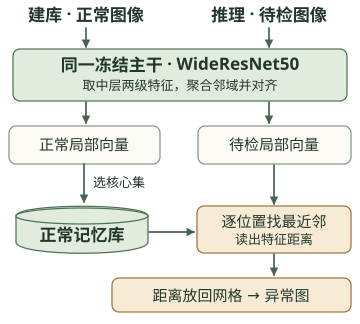
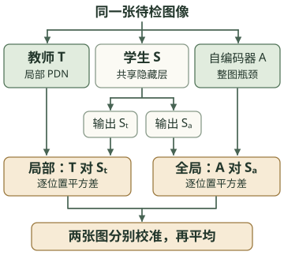
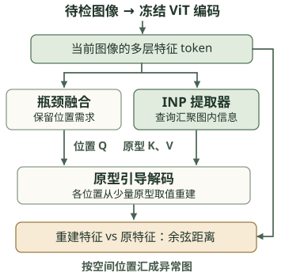

先建立正常参照，
再判断哪里偏离了正常。
工业异常检测的核心，是在缺陷类型难以穷举时，仍能识别不符合正常规律的图像或区域。特征提取、记忆库、学生—教师网络和特征重建，都是为这个判断建立依据；方法之间的关键区别，在于正常参照从哪里来，以及怎样与待检图像比较。
本页以三个固定版本为依据：PatchCore（2106.08265v2）、EfficientAD（2303.14535v3）、INP-Former（2503.02424v2）。按“原机制 → 问题 → 改动 → 训练与推理 → 证据与边界”组织，不按论文目录翻译。交互只切换原理示意或计算设定好的示例，不运行模型；作者实验与工程推断分开标记。
展开章节目录
保存正常、学会正常、从当前图像提取正常。
PatchCore：用已有正常局部，判断当前局部是否陌生。
把正常图像的局部特征存入记忆库。测试时逐块检索：如果某块找不到足够相似的正常特征，就给它较高异常分数。核心改动是中层局部表示和代表性记忆库压缩。
EfficientAD：把正常对应关系学进轻量网络，再看哪里对应不上。
学生学习正常图像上的教师特征；遇到未学好的异常，二者可能产生差异。困难特征损失与域外惩罚限制模仿方式，全局自编码器再补充物体数量、排列等关系信息。
INP-Former：先从当前图像找到正常参照，再限制特征重建。
外部正常样本可能与当前图像的外观、位置不匹配。它利用异常图像中仍然保留的正常部分，动态提取内在正常原型，再让解码器依靠这些原型重建特征，用重建差异定位异常。
这是一条理解不同正常建模机制的主线，不是三个逐代替换的版本。EfficientAD 不只是“加速版 PatchCore”，INP-Former 也没有继承前两者的全部模块。它们处理的问题、训练成本和适用假设不同。
| 方法 | 正常参照在哪里 | 异常依据 | 主要成本与限制 |
|---|---|---|---|
| PatchCore | 训练正常图像的局部特征记忆库 | 到正常近邻的距离 | 存储与检索；依赖特征可迁移性和正常覆盖 |
| EfficientAD | 学生学到的正常对应关系，以及自编码器学到的全局约束 | 教师—学生、全局自编码器—学生之间的差异 | 需要训练；学生可能过度泛化，精细逻辑异常仍难 |
| INP-Former | 当前图像动态产生的正常原型；提取规则由正常训练数据学得 | 受原型约束的特征重建误差 | 需要训练；异常可能污染原型，基础特征分辨率仍重要 |
没有缺陷标注，异常分数为什么仍然能够产生？
常规监督检测把缺陷的框和类别作为训练目标。正常样本驱动的异常检测，则先利用正常数据建立一种可比较的规律：正常局部应该接近已知正常特征，或正常输入应该能得到一致、可重建的特征。测试区域违反这种规律时，差异就成为异常依据。
因此，这三篇主要讨论的“异常”，首先是相对于所建正常模型的偏离。它不自动等于业务上必须剔除的缺陷。允许的色差可能是模型未见过的变化；不能接受的微裂缝，也可能在特征中不够突出。业务验收标准与特征可分性都要成立。
自编码器的直觉：只见过正常，应该更擅长重建正常。
你熟悉的重建路线，可以先简化为“图像 → 编码 → 瓶颈 → 解码 → 与输入比较”。正常训练要求重建误差小；如果异常无法准确恢复，误差便能提示异常。现代方法经常改为重建预训练特征，以减少逐像素纹理、颜色和模糊带来的干扰。
这个思路有两种相反的失败：网络容量不足时，正常细节也重建不好，造成误报；网络太会复制时，异常也可能重建得很好，造成漏检。正常上误差小，是训练目标；异常上误差大，是希望形成的区分能力，后者需要结构、损失和实验共同支撑。
学生—教师与孪生网络也应区分。孪生网络通常指两条关联分支的结构或共享权重形式；学生—教师在这里是“固定目标特征 + 可训练预测器”的学习关系，二者不必共享参数。是否为异常检测方法，要看训练目标和异常评分机制，不能只看“双分支”。
图像块特征，保留的是位置对应的描述，不是缺陷类别框。
以一批图像为输入，卷积特征可写为 [B,C,h,w]：B 是批量大小，C 是描述维数，h、w 是特征空间尺寸。每个位置有一个 C 维向量，描述原图中一个感受野。Transformer 常把位置展平为 [B,N,C]，其中 N 是局部 token 数。
模型先为这些局部描述计算异常分数，再按空间位置还原、插值得到异常图。插值让结果回到原图尺寸，不会补回缩放或特征提取时已丢失的缺陷证据。局部向量也不等于一个原图像素，不是 YOLO 中等待匹配真实框的候选框。
都能输出 mask，不等于都采用同一种解码器。
U-Net 通过编码器提取语义、解码器提高空间分辨率，并用跳跃连接结合浅层位置细节，直接学习像素类别。YOLOv8-Seg 则共享图像特征，同时预测检测结果、整图共享的掩码原型与目标自己的组合系数；后处理再组合原型、按框裁剪并缩放。它不是先裁剪检测框，再独立运行一个 U-Net。
PatchCore 把局部近邻距离放回对应位置，EfficientAD 把对应特征差异放回对应位置，再插值得到异常分数图。阈值化后虽然也能得到 mask，但分数不是经过监督学得的缺陷类别概率。EfficientAD 的自编码器确实有解码结构，其目标是重建教师特征，而非直接预测缺陷掩码。
依据：三篇引言及方法部分；U-Net 官方结构；YOLOv8 分割头。重建失败模式是对方法设计动机的归纳，不是声称所有自编码器、孪生网络具有同一实现。
训练留下什么，推理实际比较什么？
正常参照的来源与使用
记忆库来自正常训练图像。推理只计算特征和近邻距离，不反向更新主干，也不默认把当前待检图像加入正常库。
仅切换机制示意。正常训练、通用预训练与测试是不同阶段；详细职责见后文。
一个局部是否异常，先看有没有相似的正常局部。

“局部”描述特征范围，“冻结”描述参数是否更新。
PatchCore 中的局部特征，是中间特征图某个空间位置的一组描述数值，带有该位置感受野内的纹理、边缘和上下文。它既不是一个原图像素，也不是整图唯一的分类向量。深层位置的感受野可能很大，因此保留空间位置不意味着只依赖极小区域。
冻结骨干，是让网络参数在目标产品建库时保持不变。不同输入仍然产生不同特征；不存在“局部之外的特征被锁住”的划分。查询向量来自哪个空间位置，距离分数就回到哪个位置；匹配的正常近邻不必来自同一原图坐标。这是空间分数映射，不是把特征精确反算回原始像素。
原来的问题：整图语义可能掩盖很小的局部变化。
分类网络的深层表示擅长回答“这是什么物体”，但工业缺陷往往只是物体上的一小块划痕。仅依靠整图或很深的特征，细节可能被下采样、全局聚合稀释；高层特征还偏向预训练分类任务。PatchCore 因此把判断单位放到保留空间位置的中层局部特征。
第一处设计：局部要看得细，也要带一点上下文。
冻结 ImageNet 预训练网络，从中间层提取特征。论文默认聚合 WideResNet50 第 2、3 个分辨率模块的输出：低分辨率特征对齐到较高分辨率，再组合描述。每个位置还聚合邻域信息，默认邻域大小 p＝3。
这里的 3×3 是特征图上的邻域，不等于原图 3×3 像素。它使一个局部描述带有邻近结构，减少小幅位置变化造成的差异；但邻域过大也可能混合周围正常信息，削弱小缺陷。因此它是在局部辨别力与上下文鲁棒性之间取折中。
第二处设计：存得全面，但不能把大量重复特征都拿去检索。
把正常训练图像所有局部特征汇总起来，就得到了正常记忆库。库越大，正常变化可能覆盖越充分，但存储和最近邻搜索成本也上升。直接随机砍掉大部分特征，又可能遗漏罕见但合法的正常模式，使这些模式在测试时被误判。
PatchCore 使用核心集选择（coreset selection）：挑出少量真实特征，使原集合中的特征到这个子集的最近距离尽量小。贪心近似反复补入当前覆盖最差的特征；选择阶段使用随机投影减小计算量。这是覆盖导向的子集筛选，不要求先用 k-means 生成聚类中心，也不通过反向传播学习这些库元素。
推理时，一张异常图怎样算出来？
- 对待检图像提取同样格式的局部特征。不同图像之间可以比较，是因为使用同一个特征提取与后处理过程。
- 对每个待检向量 z，在压缩后的正常库 ℳ 中找最近邻，计算欧氏距离。距离大表示当前表示缺少接近的正常参照。
- 按位置排列局部分数，插值并平滑，得到异常定位图。整图可由最异常局部决定是否异常；论文还用近邻信息对最大距离作重加权。
PatchCore 不需要针对目标产品反向训练主干，但需要建立目标产品的正常库。“不微调网络”与“不需要正常数据”是两件事。新产品、成像条件或合法外观变化超出原库覆盖时，仍要检查特征与正常参照是否适合。
这个设计获得什么，又留下什么限制？
它把正常参照显式保存在库中，便于追查高分区域找到了哪个近邻；核心集让局部检索在成本上更可用。但异常若与某类正常局部特征接近，也可能被吸收为正常。仅比较局部外观，不会自动知道物体应该出现几次、放在什么位置。
此外，目标域与 ImageNet 差异较大时，冻结特征可能不够合适。提高输入分辨率、分块、特征适配都是后续可验证的方向，不是 PatchCore 已经默认完成的能力。
原文对照：§3 方法；§4.4 局部表示与核心集消融；附录 C.4 剩余错误。
局部分支发现陌生结构，
全局分支补上组合关系。

原来的问题：正常检索有效，但大主干和搜索仍占推理成本。
EfficientAD 选择学生—教师路线，用轻量网络学习正常特征的对应关系，推理时直接比较网络输出，避免逐块检索大型记忆库。但换成两个小网络不够：特征要有辨别力，学生还必须在正常图像上拟合好、又不能对异常也普遍拟合得很好。
先解决特征成本：把大网络的表达蒸馏到小网络。
论文提出图像块描述网络 PDN（Patch Description Network）。小型版本只有四个卷积层，较早下采样，每个输出描述对应 33×33 像素感受野。训练前，先在 ImageNet 上让 PDN 模仿大预训练网络的特征，得到有表达力的轻量教师 T。
然后进入具体产品的正常训练：冻结教师，训练同类轻量架构的学生。这个阶段不需要再运行原来用于蒸馏的大型特征网络。“教师先经通用预训练蒸馏”与“学生在目标正常数据上训练”是两个不同阶段。局部 PDN 的感受野明确，也减少了远处异常对当前位置特征的影响。
教师与学生使用同一类 PDN 结构；学生增加输出通道，是为了分别学习教师与自编码器的输出。原方法主要依靠正常训练和损失诱导的约束形成区分，并非单靠“学生结构较弱，所以无法表示异常”。学生也可能把异常模仿得很好，正常新变化也可能出现较大误差。
再解决模仿边界：为什么不能只让学生把教师学得越像越好？
对正常图像，教师和学生越一致，误报越少。但学生如果学成了普遍适用的教师复制器，对异常也输出相近特征，异常差异就消失。减少正常训练数据可能限制泛化，却也可能让合法正常变化学不全。
EfficientAD 因此在损失上作两种约束：
- 困难特征损失：在当前正常图像的教师—学生平方差中，只选误差最高的一小部分反向传播。默认取 0.999 分位数以上，约为整个 C×h×w 张量最高的 0.1% 元素。它优先修正尚未学好的正常特征，避免大量简单背景主导优化。选中的是当前误差元素，不是预先固定的一批“缺陷位置”。
- 预训练图像惩罚：额外采样 ImageNet 图像 P，压低学生用于模仿教师的对应输出，而不让它在这些域外图像上继续拟合教师。这个训练项限制模仿的泛化范围，测试时不增加网络分支。它不是给每种真实工业缺陷补上标签，也不保证对所有未见异常都产生大误差。
令 ST 表示学生预测教师特征的输出。教师特征先按正常训练数据得到的通道均值、标准差进行标准化，下文用 T(x) 简记比较使用的教师特征。推理时逐元素比较 T 与 ST，再沿通道平均，得到局部异常图。教师本身不负责给缺陷类别，它提供描述；用于异常判断的是这个描述与正常模仿关系之间的差异。
局部方法的新困难：每一块看起来都正常，整张图仍可能不合格。
接线器上多一根外观正常的电缆，局部看见的仍是合法电缆、背景和连接器；错误在于数量或组合。缺少一个零件也可能只留下正常背景，未必出现陌生纹理。仅有小感受野，无法稳定表达“本来应该有几个、放在哪里”的全局关系。
为此，EfficientAD 引入自编码器 A：整图信息必须经过 64 维潜在瓶颈，再重建教师特征。瓶颈迫使它利用正常图像中的整体规律，而不能轻易逐位置照搬输入。其重建目标是教师特征，不是 RGB 图像。
为什么全局分支不直接比较教师与自编码器？
全局瓶颈也会丢失正常细节。例如正常网格的细密纹理可能重建得模糊，T 与 A 的差异因此很大；直接当作异常，就会误报。
论文让学生再输出一组特征 SA，学习 A 在正常图像上的输出。这样，学生不仅学到正常特征，还学到了自编码器对正常图像的系统性重建偏差。全局异常图比较的是 A 与 SA：正常情况下二者可以一致，即使它们都与教师有一些差距。
遇到异常组合时，全局自编码器的输出可能改变；只看局部、在正常数据上学会预测自编码器输出的学生，不一定跟随这种全局变化。因此二者差异可能揭示逻辑异常。这个分工提供检测机会，但不是所有逻辑异常必然可分的数学保证。
局部比较
教师 T ↔ 学生输出 ST
学习局部正常描述，关注陌生结构。
全局比较
自编码器 A ↔ 学生输出 SA
扣除可预测的正常重建偏差，补充整体关系。
这是一个学生的两组输出，共享隐藏层，不是另加一整套学生网络。学生输出通道由 C 增为 2C；两组输出都与各自目标保持相同空间形状，才能逐元素比较。自编码器与学生在正常训练中共同优化；论文附录说明，自编码器也接收来自学生—自编码器损失的梯度。
把训练损失与推理差异对应起来
ℒhard：在正常图像上修正教师与 ST 的困难误差；ℒpenalty：限制学生在域外图像上的泛化；ℒAE：让 A 重建正常教师特征；ℒSTAE：让 SA 与 A 的正常输出相符。论文把前两项合写为 ℒST。
训练把正常对应关系的误差压低，推理再检查哪里偏离这些关系。损失很低不直接证明异常可分；仍须在未参与调参的异常测试图像上验证。
比较对象不同，正常重建偏差会不会被误报？
用一个标量特征代替整张特征图。所有数值均为人为设定的原理示例，不来自论文、不运行训练，也没有执行异常图校准。
| 特征输出 | T | ST | A | SA |
|---|---|---|---|---|
| 示例数值 | 1.00 | 1.05 | 0.65 | 0.65 |
直接重建差异 (T−A)²：0.1225；局部差异 (T−ST)²：0.0025；全局差异 (A−SA)²：0.0000。
自编码器把正常特征重建为 0.65，但学生已学会这种正常偏差。A 与 S_A 没有差异，避免仅因 T 与 A 不一致就报告异常。
最后一个问题：两张异常图的数值尺度不同，怎么融合？
一张图的正常噪声如果天然较大，直接平均可能淹没另一分支的有效响应。EfficientAD 用未用于拟合的正常验证图像，分别估计两类异常图的分数分位数。默认把 0.9 分位数映射到 0，把 0.995 分位数映射到 0.1，再平均两张图。融合图最大值作为整图异常分数。
这是尺度校准，不是把异常分数变成概率，也没有保证所有值都落在 [0,1]。论文的毫秒级结果还绑定了 GPU、输入尺寸、精度和计时范围；局部分支、全局分支都保留在推理中，不能只计一个 PDN 的耗时。
原文对照：§3 四组设计；附录 A 训练与推理；附录 E 计时口径。精细逻辑异常（如螺钉长两毫米）仍是论文明确列出的限制。
外部样本对不齐时，
当前图像中还有没有可用的正常信息？

原来的问题：偏离外部正常样本，未必就是缺陷。
同一产品可以有合法的姿态、颜色、外观差异。少量正常样本可能覆盖不全，导致参照与待检图像不匹配；统一处理多个类别时，一类的正常背景还可能与另一类的异常相似。增加参照数量可以扩大覆盖，却也增加存储、检索或模型区分的负担。
INP-Former 的出发点是：许多工业异常只改变一部分区域，异常图像里仍有大量正常内容。这些内容与缺陷处于同一成像条件、几何上下文，可能比外部样本更匹配。因此，先从当前图像提取内在正常原型（Intrinsic Normal Prototypes，INP），再用它们帮助判断异常。
这里依赖一个重要条件：当前图像中的正常部分确实能提供有用参照，而且提取器能够将它们组织出来。并非任意一张图像，都天然包含足以定义所有缺陷的正确答案。
先看完整路径：它依然是特征重建模型。
固定预训练视觉 Transformer（ViT）输出多层局部 token。INP 提取器从这些特征产生少量原型；瓶颈模块融合多层特征，形成解码器输入；解码器结合原型重建特征。原始预训练特征与重建特征的差异，构成异常依据。
原型路径：提供可调用的信息
预训练特征 → INP 提取器 → 当前图像的 M 个原型 → 解码器的键和值（K、V）
重建路径：提出当前位置的需求
多层特征 → 瓶颈融合 → 待重建 token → 解码器的查询（Q）
第一处设计：学会“怎样取参照”，而不是预存一组通用参照。
提取器包含 M 个可学习查询 token。查询从当前图像的 N 个特征 token 中，通过交叉注意力聚合信息，产生 M 个原型。查询参数在正常训练中学习；实际原型随输入图像变化。这就把固定的提取规则与动态的图像内容分开了。
以论文默认输入为例：392×392 图像经过 patch size＝14 的 ViT，对应 28×28＝784 个局部 token。提取器默认产生 6 个 INP；对 ViT-Base，通道维数为 768。因此可以把这一过程看成 [784,768] → [6,768] 的图内信息汇聚，批量维暂略。
这 6 个原型不是 6 个缺陷类别，也不是手工指定“金属、背景、边缘”等六类标签。它们是可学习查询从当前图像聚合出来的表示；可视化中可能分别关注不同语义区域。
从异常图像提参照，为什么不会把异常也提进去？
交叉注意力本身没有“天然排除缺陷”的保证。因此，论文加入INP 一致性损失：在正常训练图像中，让每个正常 token 都能在这些原型里找到接近的表示，以余弦距离约束正常覆盖。
这个约束教提取器用紧凑原型描述正常模式。训练只见正常图像，测试时能否继续优先提取正常内容，依赖学习到的偏好与数据结构。它并没有在测试时拿到缺陷掩码，再把异常区域剔除。原型受到污染，是必须保留的失败可能。
第二处设计：为什么不直接用“到最近原型的距离”结束检测？
因为原型数量很少。某些合法正常细节不够典型，即使没有缺陷，也可能距离全部原型较远；直接最近距离会产生背景噪声。
INP 引导解码器允许每个位置组合多个原型，重建更丰富的正常表示。解码时，当前位置特征提供查询 Q，原型提供 K、V；注意力先计算“当前位置需要从哪些原型取信息”，再用原型值组合结果。它比“必须接近某一个离散原型”的要求更灵活。
增加解码器之后，会不会又把异常完整复制出来？
这是重建路线必须面对的老问题。若异常特征可以直接沿残差路径进入输出，网络可能绕开正常原型约束，形成恒等复制。论文因此移除解码注意力的第一个残差连接，使该注意力输出依赖原型的值；再用 ReLU 注意力削弱负相关和弱响应影响。
于是，异常查询即使存在，也需要从原型提供的信息中组织重建。如果原型主要表示正常内容，异常就更难被准确恢复。这里说的是注意力取值来源受到正常原型约束；整个解码器还包含前馈网络等操作，不能把完整网络简单等同为对原始正常像素作线性拼接。
原型数 M 远小于位置数 N，这种注意力的交互规模也从 N×N 降为 N×M。它降低的是这个模块的注意力成本，不表示整个模型无须计算 ViT 编码特征，或整体耗时必然按同一比例下降。
第三处设计：合法但难重建的正常区域，不能一直被忽略。
正常图像里也有容易与困难区域。若优化主要被大量容易区域主导，少数难区域的残余误差就可能在测试时表现为误报。论文用软挖掘损失，根据区域余弦重建误差相对批次平均误差的大小，调整对应区域的反向梯度权重。
相对误差大，更新权重更高。与 EfficientAD 的硬筛选不同，它连续调整梯度，而不是只保留最高一段误差。论文通过自定义梯度操作实现，前向重建值并不因此直接乘上这一权重；把它写成“给异常图加权”会混淆训练与推理。
训练完，推理到底还变不变？
正常训练时，编码器冻结，提取器、瓶颈和解码器等可学习模块通过重建损失与一致性损失更新。测试时这些网络参数固定，但每张图像生成的原型不同。动态原型是前向产生的中间表示变化，不是每张测试图像都重新反向训练网络。
从图内生成原型，不等于无需正常训练。标准方法通过正常图像学习“怎样提取原型、怎样重建正常特征”；推理才从当前图像动态组织参照。论文的未见类别零样本实验仍使用在其他正常数据上训练好的模型，并非完全未经训练。
默认实现按特征组比较编码器与解码器的区域余弦距离，形成异常图；图像级分数使用最高 1% 区域分数的均值，而不是简单取单个最大值。正文采用的逐层符号，与附录的组间监督实现口径应一起看。
它的边界，正好来自它最重要的优点。
参照来自当前图像，降低了外部参照不匹配，但也可能吸收当前异常。例如论文附录 M 中，与背景很相似的错位晶体管被错误提取为正常原型，造成漏检。正常外观相似不代表全局位置一定正确。
少样本、多类别能力仍以相应正常训练设置为前提。论文也探索未见类别的零样本使用，但不等于主方法无需训练；附录 K 还说明其图像级零样本表现弱于专门方法。
此外，原型无法补回编码器未表达的极小、弱对比缺陷。原型数量、输入尺寸、基础特征与正常信息充足程度，仍会影响结果。
没有缺陷标签，仍然有明确的比较对象与梯度路径。
在 YOLO 等监督检测器中，网络先产生规定形状的输出，训练再确定它应与什么比较，损失形成梯度，优化器据此更新可训练参数。异常检测也遵循这个过程，只是比较对象不再主要是缺陷框与类别。
| 方法 | 比较对象 / 目标 | 哪些发生更新 | 测试时留下什么 |
|---|---|---|---|
| PatchCore | 目标产品上主要执行特征提取与核心集筛选，不拟合缺陷监督损失 | 原始冻结主干不反传；建立正常记忆库 | 冻结提取器、后处理与记忆库 |
| EfficientAD | ST 对齐 T，A 对齐 T，SA 对齐 A；另有域外输出惩罚 | 目标正常训练中，教师固定，学生与自编码器学习 | 三个网络与教师统计量、分支校准参数 |
| INP-Former | 重建特征对齐正常编码特征；正常 token 接近所提取原型 | 编码器固定；提取器、瓶颈与解码器学习 | 固定网络；每张图前向生成新的原型 |
这三篇不需要原样套用 YOLO 的“候选框—真实框”样本分配流程。特征通常有空间对应，或由注意力、最近邻建立比较关系。正常数据驱动不等于完全没有学习约束；存在近邻或注意力匹配，也不等于在做 YOLO 的正负样本分配。
无监督、单类与半监督：先说明训练时用了什么信息。
这三篇原版标准方案都属于 normal-only：用正常产品图像建模，不依赖缺陷标签训练。工业视觉论文常将其称为无监督异常检测；另一些异常检测文献把“已知训练数据属于正常类”的设定归入单类或半监督。因此，准确描述数据设定比只说“无监督”更可靠。
另一类半监督方法会进一步利用少量已标注的正常或缺陷样本，以及大量未标注数据，例如 Deep SAD。使用 ImageNet 类别标签完成骨干预训练，不等于在目标产品上用了缺陷监督。缺陷图像只用于独立测试，也不等于参与训练；若用缺陷选择阈值、参数或模型，应另外交代验证信息的使用。
依据：三篇的正常训练设置；Deep Semi-Supervised Anomaly Detection。本页统一使用“正常样本”“缺陷样本”，避免正负样本在不同任务中的指代冲突。
先有可用的特征能力，才能建立有意义的正常参照。
随机初始化的网络也有权重，但尚未学到任务需要的表示。预训练的价值，是为纹理、边缘和结构提供可迁移的表达能力。它不直接规定哪种工业缺陷必须剔除；最终正常数据与业务验收仍承担不同职责。
EfficientAD 中，有两次目标不同的模仿。
官方蒸馏代码使用 wide_resnet101_2，加载 IMAGENET1K_V1 权重，从 layer2、layer3 提取并处理特征。同一图片分别送入固定大骨干与可训练 PDN，完成空间、通道及统计对齐后，最小化特征均方差，只更新 PDN。并非把不同结构的大网络权重直接塞入 PDN。
产品正常训练：固定 PDN 教师 → 更新最终学生与自编码器
第一次模仿把较重的特征表达压缩到轻量网络；第二次学习产品正常图像上的对应关系，并限制学生过度泛化。PDN 因而先是蒸馏学生，随后成为异常检测教师。固定的是参数；每批图像仍需产生相应目标特征，或读取与当前预处理一致的缓存。
替换数据、替换权重，是两种不同操作。
- 只更换产品正常数据：通常沿用教师，在新产品正常数据上训练学生、自编码器，重新计算统计量和分支校准。
- 只更换蒸馏图像：若大骨干权重不变，主要改变 PDN 在什么分布上模仿原有表示，不代表大骨干自动获得新的领域能力。
- 更换预训练骨干或领域权重：先获得已训练好的特征提取器，再重新蒸馏 PDN，随后重做产品正常训练与校准。若只有行业图片、没有权重，还需要监督或自监督预训练环节。
PatchCore 更换特征空间后，需要重新建库，不能把新旧向量直接混用。EfficientAD 更换教师后，也不能期待旧学生仍与新目标对应。领域预训练可能有益，但更高分类精度不等于更敏感于微裂纹；过强的细节不变性也可能隐藏缺陷差别。
验证时保留官方基线，固定数据划分与有效输入分辨率，比较指定误报约束下的漏检、不同缺陷分组与运行成本。若只是更换大骨干再蒸馏，部署时仍可保持原 PDN；直接把轻量教师换成大网络，则不能照搬原论文的速度。
依据：官方 pretraining.py、附录 A.2 蒸馏、附录 C 骨干比较。替换流程与验证顺序为基于机制的工程建议。
先判断信息在哪一步失效，
再决定换哪一种正常建模方式。
三篇方法主要改进中间的表示、参照与比较机制。成像信息不足、验收规则不清楚、阈值使用错误，不能单靠更换模型消除。下面是依据机制给出的工程判断方向，不是三篇论文已共同证明的产线性能排名。
| 现象 | 先辨认的问题 | 三种机制能提供什么 | 必须保留的边界 |
|---|---|---|---|
| 微小缺陷、细裂缝 | 输入缩放后还占多少像素？特征是否保留弱变化？ | PatchCore 便于检查局部特征与近邻；另两种也应在同等有效分辨率下验证 | 近邻、蒸馏和原型都不能恢复已经丢失的信号；分块需防边缘断裂、上下文不足 |
| 弱光、低对比度 | 是成像信噪比低，还是训练与现场光照分布不同？ | 可以补充合法光照变化的正常数据，检验参照或重建对它的容忍度 | 图内参照更匹配不等于能去噪、提亮或发现不可见缺陷；成像改进可能更关键 |
| 正常外观、姿态变化 | 合法变化是否被当成异常？ | PatchCore 检查正常覆盖；INP-Former 的图内参照直接针对参照不匹配问题 | 不能为了容忍正常变化，把业务不允许的变化也一并吸收 |
| 重叠物体、遮挡 | 缺陷仍可见，还是已被完全挡住？ | 对可见区域可比较实例裁切、全图上下文或多视角方案 | 仅凭当前图像，无法保证识别被完全遮住且无其他线索的缺陷 |
| 缺件、错位、数量错误 | 局部外观是否正常，错误只在整体关系？ | EfficientAD 的全局分支有明确动机；也可结合检测、计数或几何约束 | INP-Former 可能把错位但外观正常的区域当原型；局部近邻不天然表达位置规则 |
| 高节拍、低误报要求 | 完整端到端耗时与可接受误报是多少？ | EfficientAD 是值得验证的轻量方案；PatchCore 可调压缩、检索；INP 需计入 ViT 成本 | 论文单图 GPU 延迟不是相机到剔除机构的系统延迟，批量吞吐也不等于单图时延 |
因此，当前这组材料可以形成三种对照：用 PatchCore 建立局部检索基线，用 EfficientAD 验证轻量拟合与全局关系，用 INP-Former 验证当前图像参照的价值。实际先后顺序由数据、节拍和已有基础决定，不需要假定最新模型在每类难题上都最好。
小缺陷不只有一个像素数，还要看缩放与可见程度。
工业缺陷没有通用的像素尺寸界限。至少记录实际最小宽度、原图宽度与面积、模型输入中的有效尺寸，以及相对背景纹理和噪声的对比程度。裂纹尤其要看最小宽度，不能只看总面积。特征步长也不是“低于一个网格必然消失”的硬判据。
计算示例：横向视野 100 mm、原图宽 5000 像素，每像素对应 0.02 mm。宽 0.10 mm 的裂纹在原图约宽 5 像素；整图缩到 1000 像素宽后，只相当于 1 个输入像素宽。此例只演示采样与缩放，不保证检出精度；光学清晰度、对比度和噪声仍需验证。
线缆反复变化：让模型接纳合法变化，而不是期待自动删除线缆。
正常数据应覆盖允许的线缆位置、弯曲形态、光照及遮挡关系。数量多不等于覆盖充分；大量近似连拍不能替代不同正常模式。PatchCore 通过记忆库覆盖，EfficientAD 通过正常对应关系，INP-Former 通过可学习的原型与重建机制，提供不同的接纳方式。
这些机制不保证自动学会“忽略线缆”这个语义规则。若正常线缆与缺陷在特征中相似，扩大正常范围也可能降低缺陷分数；若线缆遮住待检表面，更不能把缺失信息视为已经检查合格。可排除的背景优先限定检查区域；目标内部的合法变化则需要数据、上下文和独立验证。
INP-Former 的图内参照有助于缓解外观、姿态与外部参照不匹配，但不是通用去干扰模块。与背景相似的异常也可能被吸收到原型中。其他物体是否有纹理规律，并不足以证明该区域在业务上正常。
金属壳体有细裂纹，周围线缆会动，方案怎样建立？
假设场景：检查金属壳体表面的可见细裂纹与污渍，正常加工纹理存在差异，线缆和夹具位置允许变化。正常图像较多，缺陷图像很少，客户要求少漏检、误报可控并满足产线节拍。这是用于推演的假设题，不代表任何真实项目、性能或试验结果。
- 先明确判定标准。确认最小缺陷尺寸、允许的加工纹理、有效检查区域，以及漏检、误报与处理时间的约束。深度或几何尺寸要求不能由异常分数直接替代。
- 检查信息是否可见。观察原图与实际预处理后的缺陷，检查反光、模糊、缩放与遮挡。信息不足时先调整成像、裁切或输入分辨率。
- 组织正常覆盖与独立验证。覆盖不同批次、纹理和合法变化，清除正常训练集中的缺陷；按工件、批次或时间划分，避免近似连拍泄漏。少量缺陷留出用于检验漏检，不能只验证正常误报。
- 建立基线，再定位改进方向。可先用 PatchCore 检查特征与近邻分数；节拍不足时比较 EfficientAD；外观参照不匹配突出时加入 INP-Former 对照。这是候选验证顺序，不是产线性能排名。
- 按变化和缺陷交叉验收。看合法变化是否误报，也看真实缺陷在变化下能否保留响应；记录完整采集后处理链路耗时。测试样本太少时说明样本量与失败情况，不由“本次零漏检”外推极低长期漏检率。
同一条线缆变化，为什么要分四组验证？
只切换验证目标，不计算模型分数，也不宣称任何模型已达到这些目标。
目标：正常工件不报警。这一组建立基本误报参照，但不能单独证明模型容忍线缆变化。
方案表达的简要主线
先明确缺陷标准、允许的变化与验收约束；检查成像与模型输入是否保留信息；通过正常样本建立基线，再围绕失败样本比较不同机制。验证同时覆盖正常变化与真实缺陷，确认误报下降没有以漏检上升为代价，再决定补数据、改成像还是改模型。
一项设计有效，需要知道它究竟消除了哪一种错误。
EfficientAD 快多少：先保留指定配置的比较口径。
| 方法 | 单张延迟，batch=1 | 吞吐量，batch=16 |
|---|---|---|
| PatchCore 单模型 | 32 ms | 76 张/秒 |
| EfficientAD-S | 2.2 ms | 614 张/秒 |
| EfficientAD-M | 4.5 ms | 269 张/秒 |
这是 EfficientAD 原论文表 1 的测量：RTX A6000，网络采用 FP16，计时包括图像传入 GPU 至异常图返回 CPU。EfficientAD 输入为 256×256；单模型 PatchCore 为 224×224、WideResNet-101、1% 核心集，检索规模也与训练图像有关。S 版单张延迟约为该 PatchCore 配置的 1/14.5，吞吐量约为 8.1 倍。批量不同，二者不能直接互取倒数；这些倍率不是现场保证。
轻量 PDN 与省去记忆库检索，是速度收益的重要来源。相对代价包括目标产品上的训练、收敛与泛化控制，以及教师改变后的重新拟合。不能把 EfficientAD 概括为“必然牺牲精度换速度”，也不能据此推断哪一种方法一定更适合极小缺陷。
依据：EfficientAD 表 1、附录 E 计时方法。数字来自论文，不是本地复现。
| 设计问题 | 对应证据入口 | 能支持的判断 |
|---|---|---|
| PatchCore 的上下文是否越多越好？ | §4.4.1 不同特征层、邻域大小 | 局部信息和上下文需要折中；不能仅凭“更深”推定更适合微小缺陷 |
| 核心集是不是随便少存一点？ | §4.4.2 与随机采样、代理特征比较 | 代表性覆盖是压缩后保留表现的关键，压缩比例仍有取舍 |
| EfficientAD 的改善来自哪一项？ | 表 4 累积消融、表 5 独立移除；表 3 参数变化 | 分别观察困难损失、域外惩罚、全局分支与校准的作用；不同组合可能有交互 |
| INP-Former 只是多了一个解码器吗？ | 表 5 组件消融；图 4 一致性损失；图 5 软挖掘 | 原型路径、正常覆盖约束与困难优化分别承担职责；消融结果支持其组合，不能仅靠结构图证明效果 |
| 图内原型是否能包办所有异常？ | INP-Former 附录 M 失败样例，附录 D/E 分辨率与骨干 | 原型污染、特征分辨率与预训练表示仍构成边界 |
这些是各自论文内的证据入口。三篇原始最优分数采用不同训练、输入和评测条件，不能直接横排后就认定某模型全面领先。需要区分单类别、统一多类别、少样本和未见类别零样本设置，它们提供的正常信息不同。
对真实工业数据，至少把四组实验分开。
- 公平模型比较：同一数据划分、相同验收目标、可比输入与计算预算；记录各方法是否允许独立类别模型、是否使用外部数据或测试批次信息。
- 问题分组实验：按缺陷大小、对比度、姿态、光照、遮挡程度及逻辑类型拆开结果。整体均分提高，不代表最关心的小裂缝也提高。
- 受控消融与敏感性：固定其他条件，改变分辨率、核心集比例、损失或原型数量。重复运行，避免把随机变化当作机制收益。
- 部署与泛化实验：新批次、新日期、真实相机与硬件。完整计入裁切、缩放、数据传输、模型、检索、后处理，分别报告单图延迟、吞吐和显存。
指标也要对齐使用目标：图像级检查漏检与误剔，定位检查缺陷区域是否被覆盖。像素 AUROC 不能单独代表小缺陷可用性，还应结合区域指标、缺陷分组召回，以及指定误报限制下的漏检表现。图像误报率和像素误报率不是同一口径。
论文使用的测试集最优 F1 阈值，或在测试集上选最佳训练轮次，不能直接当作可部署规则。现场阈值应由独立验证策略确定；正常验证数据可估计误报，但仅有正常数据不能完整估计缺陷漏检。
本页沿用的梳理原则
- 先讲原方案为什么存在，再讲它留下的矛盾；不把旧方法概括成无效设计。
- 每个模块都交代用途、输入、输出，以及如何影响损失或推理结果。
- 用通用名称定义概念，不依赖对话中的临时字母或私有简称。
- 将数据产生、匹配或比较、损失、梯度更新分开，再接回完整路径。
- 机制解释、简化演示、论文证据与工程推断分别标明。
- 结论保留条件与代价，不由新旧年份推定通用优劣。
最后回到三句话
PatchCore 问：这个局部，能否找到相似的正常经验？
EfficientAD 问：正常情况下应有的特征对应关系，是否仍然成立？
INP-Former 问：能否从当前图像得到更匹配的正常参照，并依靠它重建正常特征？
继续看新模型时，可以先定位它改变的是特征表达、正常参照、比较规则、训练约束，还是工程执行。知道改动落在哪里，才容易判断它能否解决眼前的问题。
原理讲解与全文翻译分开维护。
- PatchCore · 2106.08265v2
英文原文 · 原始 PDF · 原论文条目。重点对应 §3、§4.4、补充材料 C。 - EfficientAD · 2303.14535v3
英文原文 · 原始 PDF · 原论文条目。重点对应 §3、表 3—5、附录 A/B/E。 - INP-Former · 2503.02424v2
英文原文 · 原始 PDF · 原论文条目。重点对应 §3、§4.3、附录 A/D/E/K/M。
本页是依据固定版本论文写成的独立机制讲解，不是新的逐段翻译，不表示作者认可，也没有在本地执行模型或复现实验。链接中的译文用于个人对照阅读；本页不改变原论文或译文的公开传播许可。